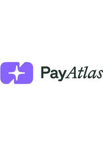

Trade Mark Journal No.2025/044 31 October 2025
UK00004248794 13 August 2025 (9,35,36,42)

- Class 9
- Computer software for processing online and offline payments, electronic payment transaction initiation, transferring funds to and from others; authentication software for controlling access to and communications with computers and computer networks; magnetically encoded credit cards and payment cards.
- Class 35
- Advertising, marketing and promotional services; advertising and marketing services provided by means of social media; promoting the services of others, namely, providing information regarding prices, pricing models, transaction and settlement fees, online and offline payment methods, presentment and settlement currencies, settlement terms and fees, foreign exchange rates, rolling and other types of reserves, transaction limits, payment and service features, customisation capabilities, integration options, special offers for the services of others; promoting the goods and services of others by providing hypertext links to the web sites of others; promoting the goods and services of others by providing a web site featuring links to the online web sites of others; business consulting services in the field of online payments; managing and tracking credit card, debit card, ach, sepa, swift, electronic wallets, cryptocurrency, prepaid cards, payment cards, and other forms of payment transactions via electronic communications networks for business purposes; business information management, namely, electronic reporting of business analytics relating to payment processing, authentication, tracking, and invoicing; business management, namely, optimisation of payments for businesses; provision of information relating to the online and offline payment services including financial products; economic forecasting; information and advisory service relating to all of the aforesaid services.
- Class 36
- Provision of financial advice relating to the online and offline payment services; financial services relating to online and offline payments; financial forecasting and analysis; financial strategy planning services; financial transaction services; credit card and payment processing services; processing of contactless credit and debit card payments; information and advisory service relating to all of the aforesaid services.
- Class 42
- Computer services, namely, integration of computer software into multiple systems and networks as well as integration with previously mentioned; processing payment transactions; providing temporary use of online non-downloadable software development tools; providing temporary use of non-downloadable software for configuring credit and debit card readers; providing temporary use of non-downloadable software for managing, reporting, and reconciling payment transactions made online and offline; providing temporary use of non-downloadable software for configuring mobile and web applications to accept electronic payments; providing temporary use of non-downloadable software for allowing third-party sellers to accept electronic payments; providing temporary use of non-downloadable software for management of payments made online and offline; providing temporary use of non-downloadable software for management and deployment of multiple credit and debit card readers.
Kyrychenko Denys Igorovych